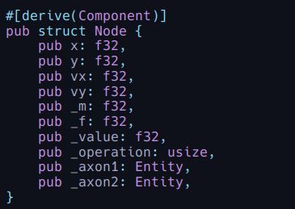
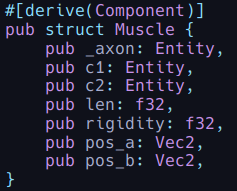
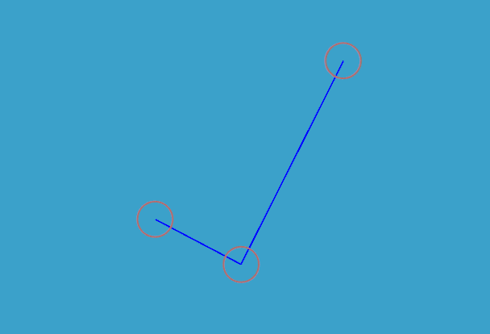
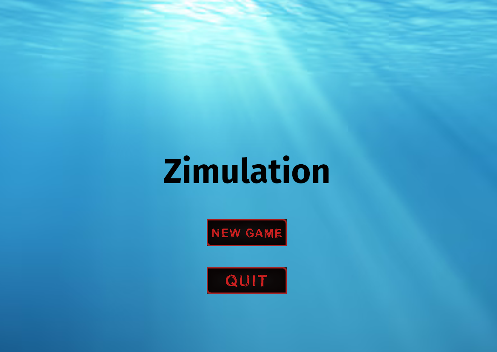
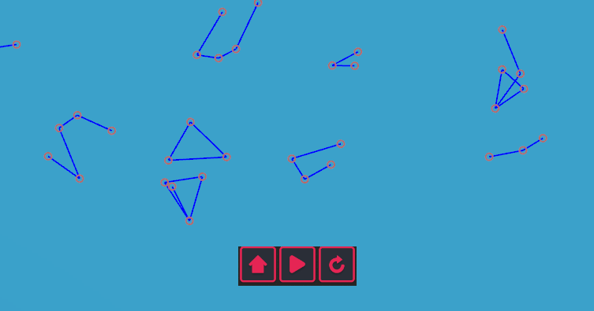

Un projet de simulation aquatique évolutive en Rust
Zimulation est un projet développé en Rust qui vise à simuler un environnement aquatique avec des créatures évolutives.
Découvrez les étapes clés du développement, les défis rencontrés et les solutions apportées.
Voici les étapes clés du développement de Zimulation :
Les créatures sont composées de nœuds (articulations) et de muscles pour le mouvement.
 Voici une représentation visuelle d'une créature.
Une interface utilisateur intuitive a été ajoutée pour le menu principal.
Des boutons ont été ajoutés pour améliorer l'expérience utilisateur.
Notre équipe est composée de quatre membres passionnés, chacun apportant ses compétences et sa motivation pour faire de Zimulation un projet réussi. Voici une présentation détaillée de chaque membre :
Je m'appelle Etienne. Cela fait quelques années que je suis intéressé par l'informatique, notamment grâce à ma spécialité NSI au lycée.
Je suis particulièrement attiré par la résolution de problèmes et la cybersécurité. Ce que je préfère à Epita, ce sont les projets de groupe, surtout en programmation.
J'adore travailler en équipe, même si cela peut parfois poser des défis. C'est lors de ces projets que j'apprends le plus et que je peux corriger mes défauts.
Ce projet me passionne car nous avons eu la liberté de choisir son thème. Bien que la programmation en Rust soit un défi en raison de sa documentation limitée et de sa syntaxe complexe, mes deux années à Epita m'ont préparé à surmonter ces obstacles.
Je suis très motivé à donner le meilleur de moi-même pour ce projet.
L’informatique était un domaine nouveau pour moi avant d'arriver en première, où j'ai choisi l'option Sciences de l'Ingénieur pour explorer cette matière.
Après avoir réalisé des travaux pratiques passionnants en binôme, j'ai décidé de me lancer dans une école combinant ingénierie et informatique.
Je trouve l'idée de simuler un environnement génétique, particulièrement aquatique, très pertinente. Étudier la sélection naturelle et les décisions des espèces face à des risques élevés est fascinant.
Bien que la réalisation d'un monde évolutif soit un défi, je compte mettre à profit mes expériences récentes, comme l'IA du S3 ou le jeu vidéo du S1/S2.
Travailler avec ce groupe est motivant, car je connais déjà certains membres et je suis prêt à persévérer face aux obstacles.
Je m'appelle Pierre Nouet. Passionné de jeux vidéo depuis toujours, j'ai toujours été fasciné par leur création. J'adore résoudre des problèmes, ce que l'informatique propose constamment.
Bien que je ne sois pas un expert en IA, mon intérêt pour ce domaine a grandi au fil de mes études, notamment grâce au projet de S3.
Ce projet combine mes centres d'intérêt : la biologie, l'informatique et la gestion d'une interface graphique comme dans un jeu. C'est une source de motivation immense pour moi.
Je suis un sportif qui aime se fixer des objectifs ambitieux. Mes premières expériences en programmation ont été avec Arduino et des petits robots, avant de créer un jeu vidéo sur Unity pendant un stage au lycée.
J'ai toujours aimé créer et optimiser des choses, ce qui m'a naturellement conduit vers la création de jeux vidéo et de simulations. Ce projet est pour moi une opportunité de combiner défis techniques et créativité.
Voici une liste des principaux défis techniques et organisationnels que nous avons rencontrés lors du développement de Zimulation :
Tout passe par le code, rien n'est graphique contrairement à Unity. Le temps d'adaptation a été long.
De plus, Bevy évolue énormément, et de nombreuses sources d'informations ne sont plus à jour.
Contrairement à C#, Rust utilise un modèle ECS (Entity-Component-System), ce qui a nécessité une phase d'adaptation.
Nous avons rencontré des difficultés avec les crates de physique comme Rapier2d et les colliders rectangles.
Bevy ne dispose pas d’un système de layout aussi intuitif que d’autres moteurs de jeu comme Unity.
Nous avons tenté d'utiliser la crate NodeBundle, mais cela a nécessité beaucoup de temps pour obtenir un résultat satisfaisant.
Beaucoup de temps a été investi dans le débogage, notamment en raison de la complexité du langage Rust et de l'architecture ECS.
Nous avons manqué de ressources sur des systèmes simplifiés de modélisation de l'eau, ce qui a rendu cette partie du projet particulièrement difficile.
Voici les solutions que nous avons mises en place pour résoudre les problèmes rencontrés :
Au lieu d'utiliser une crate comme Rapier2d, nous avons implémenté nos propres calculs de collisions pour mieux contrôler la physique.
Pour améliorer l'interface utilisateur, nous avons ajouté des marges pour mieux positionner les boutons et les éléments de l'UI.
Nous avons utilisé une version antérieure de Bevy pour les sprites afin de contourner les problèmes de compatibilité.
Nous nous sommes inspirés de "ACTUALLY Improved Evolution Simulator" pour modéliser les créatures de manière plus réaliste.
Un système de frottement a été ajouté pour réguler les mouvements des créatures.